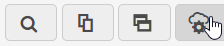
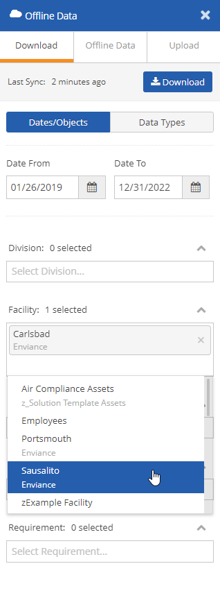
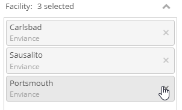
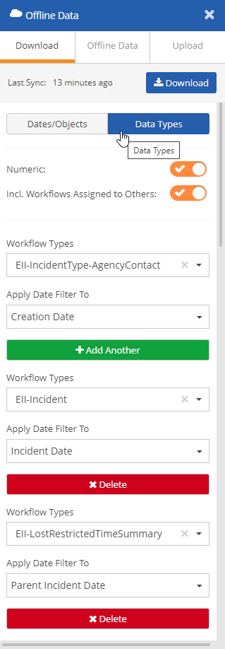

You can use the Offline Data settings to set up a collection of data that you want to download for working offline. The Offline Data panel allows you to select all objects whose associated data you want to work with offline. However, this may include objects that are not represented on Portal pages, so you should be sure that the objects you select are also accessible from a current Portal page.
When you use the Access Offline button on a portal page, then choose the option to Save for Later, the objects are automatically added to the Offline Data settings. You can review the selected data in the Offline Data panel.
When setting up Portal pages that will be used in offline mode, best practice is to use only one panel per page to facilitate object selections.
The Show Users All Objects in System option for page and panel settings does not apply to Offline Data settings. Users will still require appropriate object permissions to work with them offline.
To review or edit your offline data collection from the Offline Data panel:
Select the Offline Data icon at the top of the page menu.

In the Dates/Objects view, the date fields show the date range for the data that will be downloaded. To edit dates, click the calendar in the field.
The selected objects define the location of the data in the system hierarchy.
You may add or delete objects by clicking in the boxes and selecting from a list. Type a few characters of the name to search and filter objects by name.

For numeric data, data is filtered by the location(s) selected. If no requirements are selected all requirements in that location will be included.
To remove a location from the download collection, click the X to remove the location.

Workflows will be filtered for association with selected objects.
It is recommended that you do not attempt to download numeric data and workflows at the same time, as the object selections for the numeric data may conflict with the workflows you want.
In the Data Types panel select what types of data you want to download.

To download numeric data:
Numeric: Set to ON to download numeric data. (No other selections are necessary.) Set to OFF if you do not want to download numeric data for working offline.
To download workflows:
Workflow Types: Select the Workflow Types that you want to include. (Leave blank if you are downloading numeric data.)
Apply Date Filter To: For each workflow type choose the field that the date range (on the Dates/Object tab) applies to.
Inc. Workflows Assigned to Others: Turn OFF if you want to only download workflows assigned to you. If ON, selection will include all workflows you have permission to view, which may include those assigned to other users.
To add more workflow types, select Add Another.